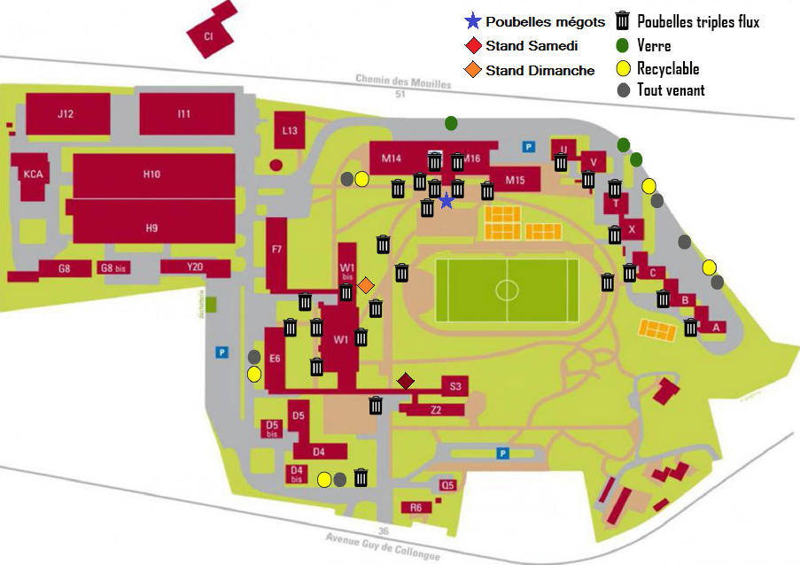

<ion-view view-title="Carte">
  <ion-content class="padding">
    <div class="corpsinfo">
	<head>
		<meta content="text/html; charset=utf-8" http-equiv="Content-Type" />
		<link rel="stylesheet" type="text/css" href="style_dvtdurable.css"/>		
	</head>
	
	<body>
		<br>
		<br>
	<!-- <div id="wrapper">
	<div id="header">
			<ul>
				<li><a href="tab-consignes.html">Consignes de tri</a></li>
				<li><a href="tab-stands.html">Stands et jeux</a></li>
				<li><a href="tab-autactions.html">Autres actions</a></li>
				<li><a href="tab-charte.html">Charte</a></li>
				<li><a href="tab-enplus.html">Pour aller plus loin</a></li>
				<li><a href="tab-carte.html">Carte verte</a></li>
      
			</ul>
		</div>
	</div> -->
	


	<div id="paragraphe">
	<p align="center">
	</img></p>
	</div>
	
</br>
</br>


</div>
</body>
</html>